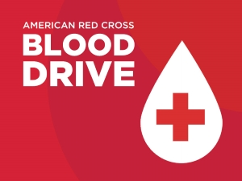
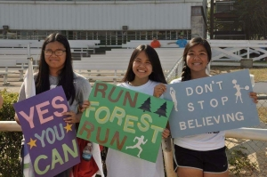

The Big Event

The Big Event is an annually-occuring day-long event created by Texas A&M University with the goal of giving back to the local community. Last year I had a blast gardening and painting for locals, and I can't wait to go again this year!
Learn more about the Big Event!Blood Drive

In previous years, I would volunteer for blood drives bi-annually. Instead of giving blood, I spent the day assisting with volunteer navigation and organization. Now, I try to donate whenever I can.
Learn more about donating!Buddy Walk

The Buddy Walk is an event hosted by the Down Syndrome Association of Houston to support of those with Down Syndrome. I volunteered at these walks by cheering on walkers and providing them with refreshments when need be.
Learn more about the Buddy Walk!